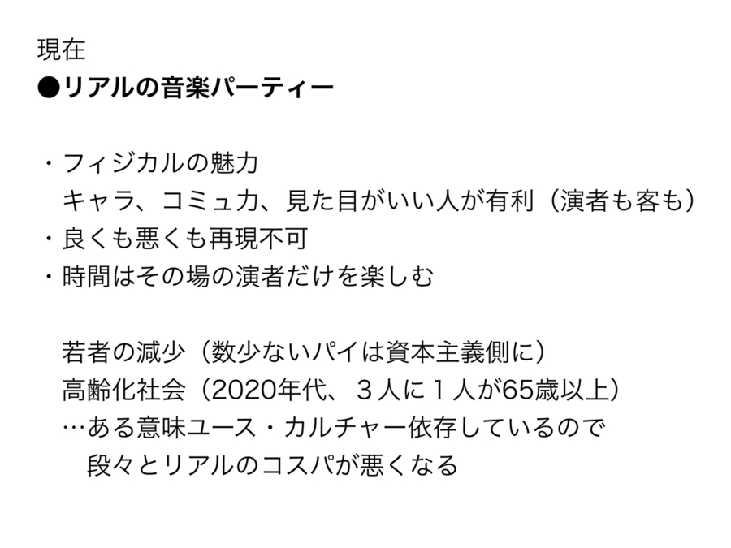
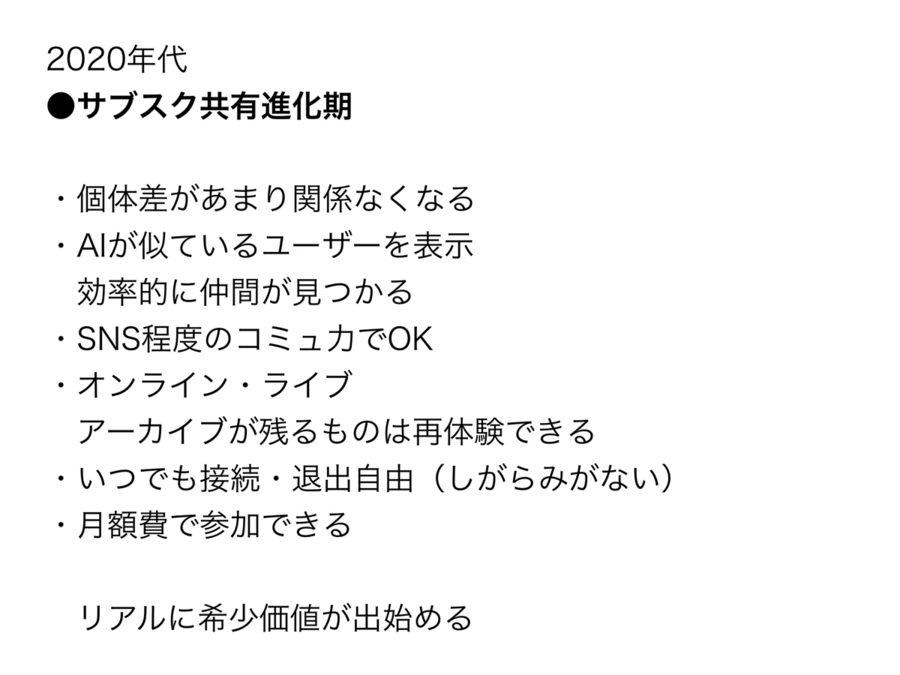
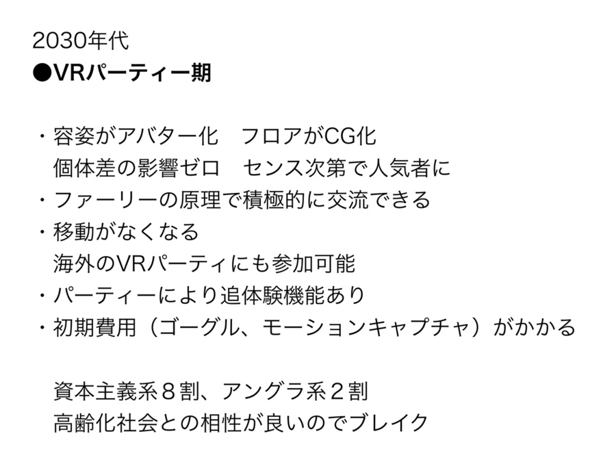
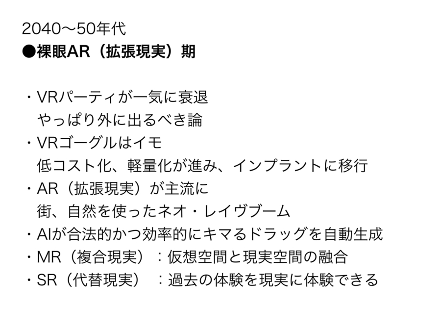

-
Guests
INDGMSK
thaithefish
seaketa
La Reprise -
Masamichi Furukawa
ゲストにお招きした4名が選曲するアンビエント音楽を聞きながら、それぞれに持ち寄った「ちょっと豊かになるモノ・コト」についておしゃべりするお茶会を開催しました。
ここでは、お茶会で紹介したモノ・コトや、そこから派生したエピソードなどを紹介します。Masamichi Furukawaのちょっと豊かになるモノ・コト
リアル・オーガナイザーが消える未来
まず、僕が紹介するのはコンビニとかで500円とかで良く売っている未来予測本です。これが結構、時系列にまとめられていて面白いんです。
日本の未来予測一覧表
今回はこの本とミシェル・ウエルベックの『ある島の可能性』という本から音楽のライブ体験における未来予測をしてみました。
『ある島の可能性』はオリジナルの現代人から20世代以上経たネオ・ヒューマンの世界を描いた未来のSFです。どんな未来かというと人類を悩ませてきた煩わしい要素がどんどんなくなって、他者と接続が要らなくなった世界なんですけど、これがひと昔前のSFよりリアルなんです。 - Masamichi Furukawa
-
リアル・オーガナイザーが消える未来
『ブレードランナー』や『攻殻機動隊』、『砂の惑星 DUNE』でもいいんですけど、SFの多くはテクノロジーが進化して電脳化している割に、当時の冷戦感も引きずっているんでしょうけどまだフィジカル的な強者が支配していたりして、僕にはそれがあまりリアルではありませんでした。というのも、ネット環境の利便性が上がると自然とか運動するみたいな超ベーシックなものを除いてはどんどんリアルなコミュニケーションは効率が悪くなっている、と感じるからです。1日8〜10時間ほど働き、移動や付き合いを含めると自分の時間というのはせいぜい3、4時間。効率的に時間を使いたいという欲求が生まれるのは当然です。自分もライブに行くより家で何アーティストも聴く、映画館よりも配信で済ます、など自宅接続する方が楽だと感じる瞬間が増えています。つまり、リアルでの行動はどんどん地味になっている。ここからアンドロイドとどつき合ったり、銃で戦い合う未来が考えにくいんです。リアル特有のしがらみや接続を絶った未来が人類が求めた生活とするウエルベックの方がリアルと感じるのはそういう点です。
この先音楽の世界もストリーミングなどで、プレイリストをもとに他者と繋がれ、ライブも映像共有されタイムラインやいいね機能などのSNS化が進んで、音源やグッズ、チケットもそこで買えるようになれば、もうほとんどは自宅で事足りる。現在でもイベントに行くより人のしがらみもない自宅で、聴きたいものを沢山掘って自分が良かった視聴体験をアップして自分を知ってもらえればいい、というタイプの若者も多いと思います。街にかっこいい若者が増えたとか言われますけど、あれはルックスやコミュ力があるか、昔ながらの資本主義的なストーリーに侵されている層の純度が高くなって、いわゆる“持たざる者”を自覚する人たちが、リアルのコスパの悪さに気付き出して街に出なくなったのも一因としてあるのではないかと思います。
つまり、自宅でも人と繋がってライブ体験に近い興奮や感覚が得られれば“現場の自宅化”が進む。関西のライブの音楽シーンを見てもオーガナイザーを選ぶ若者は減っているように思います。これは才能がある人がいないのではなくリアルのコスパがどんどん悪くなっている状況を肌で感じているから、もあるのではないでしょうか？今現在のリアルのパーティーを私なりに整理してみました。 -
リアル・オーガナイザーが消える未来

これが次の段階「サブスク共有進化期」になればだんだんと金・時間・手間の格差が開き出します。
- リアル・オーガナイザーが消える未来 
-
リアル・オーガナイザーが消える未来
2020年代には主催側もリアルで一生懸命頑張って赤字になって10人程度なのと、ネットで数百人のアクセスがあるのだったら後者の方がコスパが良い、と思う若者が増えてくるのではないでしょうか。ただしこの段階ではパーティーがオンラインで進化するという話ではなくてオルタナティブなものです。あくまで利便性が上がっただけです。中国のTencent MusicやQQのように、オンライン・ライブに参加できる仕組みができたり、限定のライブvirsionの音源や映像、グッズ、チケットもそこで買えるようになり、似ている属性のアカウントがAIによって表示され、効率的に仲間が集められます。SNS要素が入れば、ますます現場よりも楽しいと思う人も出てくるでしょう。でも何だかんだリアルのライブにはまだ負けてしまうので、アーティストは両輪になると思います。しかしだからと言ってリアルのパーティーがダメになるかというとそうではなく『アンドロイドは電気羊の夢を見るか？』で本物の動物を飼うことに価値があるように、逆にリアルに希少価値が生まれてくるのではないかと思います。
そして、この後、未来予測本によると30年代くらいからVRの技術がどんどん上がってくる。この段階になれば、リアルの代替としてはかなり釣り合いが取れてくる。『レディプレイヤー１』みたいな世界です。
- リアル・オーガナイザーが消える未来 
-
リアル・オーガナイザーが消える未来
ここに書いているファーリーというのはこういうものなんですけども。
Furry fandom
Wikipedia
-
リアル・オーガナイザーが消える未来
ファーリーとは、英語圏でのオタク用語における萌え属性の一つで、いわゆるケモノ化と言われるようなものです。アメリカだともう数百人規模のコンベンションがあったりもするくらい人気です。なぜかと言うと、これPTSDや対人恐怖症、社会に出れない傷を負った人に大変な効果があって、動物になる事で他者と会話できたり、ハグできたり、ふざけあってみたりと生身でいる時ではできない事ができるようになれるんです。これがコスプレ会だったらダメでしょうね。美貌やお金をかけた人が強くなって余計つらくなるというリアルと同じ格差が生まれちゃいますから。完全に皆がフラットな動物だからいいんです。 それと全く同じ原理でアバターになる事で個体差の影響がなくなって、逆にセンスがある人が注目されちゃう。それにいつでも都合のいい時間に接続できて、場所も選ばない。ベルリンでもロシアでもアフリカでも色々な世界の面白いパーティーに参加可能です。あとこれは高齢化社会にもボケ防止や自宅でできる軽い運動みたいになって相性がいいので、高齢化する先進国では受け入れられやすいのではないでしょうか。ただ現在のVtuberの状況を考えるとキズナアイ的な資本力側とアングラ側と分かれそうな気がします。soujさんとかがVR版dark jinjaとかFREE RAVEをやってくれたらすごくかっこいい世界を作ってくれそうで参加してみたいです。 続いて、この本に基づいて、さらに2040年〜50年の未来を想像してみました。さっきから完全に与太話ですけども…。
- リアル・オーガナイザーが消える未来 
-
リアル・オーガナイザーが消える未来
どうもこの頃にはインプラントでもう裸眼ARができちゃっているみたいなんですね（笑）。で、完全にVR期は完全に旧世代になり衰退します。ガラケーからiPhoneに変わったくらいの感じで低コスト化と一般普及が進みます。こうなるとVRではなくてAR、拡張現実の世界です。今だと『ポケモンGO』みたいな感じですかね？現実に色々情報が載ってくる。街、自然が舞台になるのでネオ・レイヴブームが起こるかもしれません。その頃にはAIが合法的かつ効率的にキマるドラッグを自動生成してくれて、かつてのレイヴ時代を懐かしむようなパーティーが組まれる事でしょう。これは製作者側にも良い話ですね。VR環境と現実環境を融合するMR（複合現実）や過去を現在と同じ感覚で体験できるSR（代替現実）という技術も進んでいるようなので、音楽以外でも映画やアートの分野でも未体験な事ができそうです。
というわけで、2020年代は東京みたいな都市以外は外に出てもどうせ若者はいませんし、無理に外見のいい人、金がある人、コミュ力がある人と比較せず、僕らは家で楽しむスキルを上げるのが得策です。またアーティストの人はボアダムスみたいな時代やそういう存在がいないと嘆くおっさんの声は忘れてネットでの創作８：ライブ２くらいで割り切るのが一番良いと思います。ネットでヤバけりゃリアルに来ます。その間にお金とVR人脈を作って30〜40年代になったらバーチャルで楽しむ、という具合に備えをしておくのがいいのではないでしょうか。
-
リアル・オーガナイザーが消える未来

-
INDGMSK
INDGMSKのちょっと豊かになるモノ・コト
本麒麟・ボンビーガール・アンビエント
本麒麟が好きです。本麒麟とはKIRINから2018年リリースされ、既存の発泡酒のうす味、シャバシャバという概念を180°転回させてしまったアンセム中のアンセム。今もテーブルの上に9個あります。毎夜毎夜飲み続け去年は多分200本くらい飲んだ印象ある。大変お安くお得です。アルコール度数も6%でお得です。
ボンビーガールが好きです。テレビで部屋を探す番組で大変面白く視聴しています。隔週くらいで世界仰天ニュースが放送されることがあり、がっかりします。でも、そもそも夜10時からの放送時間に対し平均帰宅時間が10時半なのであんまり観るときないです。
アンビエントがまあまあ好きです。自分はlightmellowbuという90年代前後の和モノシティポップを紹介する集団に参加し活動しています。自分はブックオフに行って280円や500円のCDを探すのですが、その際にヒーリング・イージーリスニング等のコーナーも必ずチェックしており、その際にジャケ買いなどをして少しずつ聴いています。それらもやはり90年代頃の国産のアンビエントです。誰にも顧みられなかったという意味ではシティポップもアンビエントも共通の哀愁があります。去年などはVaporwave→シティポップ、ニューエイジの流れを踏襲しつつ新たな切り口での語りを生み出した俗流アンビエントという言葉も生まれました。そういうわけでみんなアンビエントにハマっています。Love&Piece。アンビエントって時間が長いからあまり働かなくても良いお金持ちの有閑貴族しか聴けないように思っていますが、働いてて時間が無いし、あまりお金持ってなくて嫌だなぁと思っている人も1分とかちょっとだけでも聴いたら良いと思いますよ。癒しの効果があります。お金は貯まりませんが。また癒しだけでなく、プラス思考になったり、ダイエット効果があったりとアンビエントには様々な実用性があります。人生が豊かになります。
どうぞみなさんボンビーガールを観ながらアンビエントを聴いて本麒麟を飲んで楽しい暮らしを。以上INDGMSKのちょっと豊かになるモノ・コトでした。元気出していきましょう、エーザイ。lightmellowbu
-
INDGMSKのかけた曲
Water Song - 木下伸司 …アルバム『SPA』(2006)より
80年代中盤にFantiというトレンディ・アーバン・シンセポップユニットで活動し、90年前後からはゲーム音楽等への参入、そしてその後商業アンビエント作家に転身した彼のアンビエント界隈では名作とされる水系アンビエントはまさにスパの如し聴き心地。サウナとアンビエントの相性ってかなり良いですよね。サウナでアンビエントイベントがあれば行ってみたいものです。
The Water Garden - kojun …アルバム『The Water Garden』(1995)より
沖縄出身のテクノ作家による水系アンビエント。終末後、人間の居なくなった世界を思わせるような、静謐な庭園。そこを流れる水の音に小鳥の鳴き声が交錯、その中を嫋やかなシンセが通り抜ける、テクノ・アンビエント快作。ジャケ買い必至です。
-
thaithefish
thaithefishのちょっと豊かになるモノ・コト
果たしてこの世に不要なものはあるのか、
という問いを投げかけたいのですがメルカリの話をします。
メルカリって出品者にとって不要なもの、断捨離だったり故人の思い出の品からだったり(勿論、転売等もありますが)、出品欄を見ているとその人の生活感や人となりを覗き込むことができて、レコード店とは違う趣があって好きなんです。
僕はもっぱら安いCDを見つけ「いいね！」をして購入しているのですが、先日Dellaというレーベルの「プラス思考」というアルバムを購入したら赤いスマートフォンが届いてしまい面倒ながらも面白いと思ってしまいました。自分にとってスマホなんて全く必要ないし、逆に赤いスマートフォンを買ったつもりがプラス思考なんて怪しげなCDが届いた人がいるのですから。その時に改めて、不要の裏には必要も潜んでいると思いました。
響野夏子というアーティストのQui Qui(1989)という作品には"UN BEAU PHYSIQUE"という曲があり、本人の解説によれば「聴く側のコンディションよって楽しくもなり、暗くもなれる両極を持ったバイサウンド」が収められているのですが、アンビエントだけでなく音楽には潜在的にそういった両極性や表裏一体が含まれている気がします。
自分にとって心地良い・必要なモノは勿論、居心地の悪い・不要なモノを尊重し、目を向けて見ることが豊かな暮らしに繋がっていくような気がしませんか。
スマホは返送しましたが、僕のプラス思考は「回収不能」との事で届きませんでした。 -
thaithefishのかけた曲
t e l e p a t h & Agia - The Light Of Our Love
テレパス能力者時代に築き上げられた引き延ばしの恍惚をオリジナルに昇華したアルバムのタイトル作。シンセフレーズが神がかった1曲です。
Knopha - 三 San
上海のレーベルから今年リリースされた1枚からです。「ハウスの人が作るアンビエントは蕎麦屋が作るカツ丼」と先日つぶやいたりしたのですが、この方も例に漏れず素晴らしいです。
-
seaketa
seaketaのちょっと豊かになるモノ・コト
Vlog(Video Blog)
私は映像からチルやアンビエントの要素を感じる動画が好きで時折見ています。
その中でも最近良いなと思うのが落ち着いた暮らしを撮影しているVlog(Video Blog)です。
世間で流行っている方で言うと inlivingさん の様な方の映像です。ここからは私がVlogについて思ったことをつらつら書いていく文章になります。適当に読んでいただければと思います。
-
Vlog(Video Blog)
슛뚜sueddu
この方は暮らしが丁寧で光の加減も綺麗で正に映像のアンビエントという感じがします。この人に限らずですが、Vlogで時折入る環境音が私は好きです。
-
Vlog(Video Blog)
KYURIN규린
先程の方が理想的な丁寧な暮らしだとするならばこちらはお洒落な大学生の暮らしという感じです。お友達とご飯を食べに行くなど、これぞVlogみたいな映像ですが何処と無くお洒落で少し落ち着いている感じが好きです。
-
Vlog(Video Blog)
机紹介(My desk tour ) - Long dis
そんなVlog界隈をみているとLofi hiphopをBGMとして使っているのをちらほら見かけました。おそらくお洒落でチルなBGMを探した時に自然とここにたどり着いたのではないかと思います。 日本の女子高生のVlog にも 先程のKYURINさんに至っては映像にもその要素があります。
-
Vlog(Video Blog)
VLOG 집순이는 집에서✂️ 2019 다이어리 표지 꾸미기 • 찰리푸스 콘서트 • 아침 만들어 먹기 • 마샬 헤드폰 언박싱 | KYURIN 규린
個人的な結びつけですが、音楽にもチル、アンビエントのブームが来た様に、 この記事 にもある通り、日常生活においても落ち着いた暮らしというのがブームなのではないかと思います。こんまりさん、日本だとinlivingさんが同時期に注目されたのももしかしたら偶然ではないのかもしれません。
以上で私のVlogについての雑記を終わります。これを読んで少しでも楽しんでいただけたら幸いです。
-
seaketaのかけた曲
Miki Yui - koko
こちらは12kのサブレーベル、LINEからのリリースです。私は12k主宰のTaylor Deupreeのライブを観た時に初めてアンビエントの良さが分かった気がしました。
LINE . Sound Art Editions
-
Name Your Price